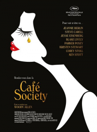

14 CAFÉ SOCIETY
- Critique
- Comédie dramatique


Nous sommes dans les années 30 et Bobby est un jeune homme qui quitte New York pour Hollywood. Son oncle est un impresario célèbre et va pouvoir l’aider à se faire une place dans le monde du cinéma. Mais c’est sa rencontre avec Vonnie, la secrétaire de celui-ci, qui va tout faire basculer, même si cette histoire d’amour est loin d’être simple…
On reste dans du Woody Allen plutôt traditionnel, c'est-à-dire un film qui se laisse largement regarder mais qui ne marque pas vraiment. Néanmoins, grâce à une photographie très soignée, à certains dialogues hilarants et à une grosse performance de ses acteurs principaux, on peut dire de Café Society qu’il est plutôt un bon cru du réalisateur. En attendant le prochain…
- Timothée
- 09.06.2016, 19:00